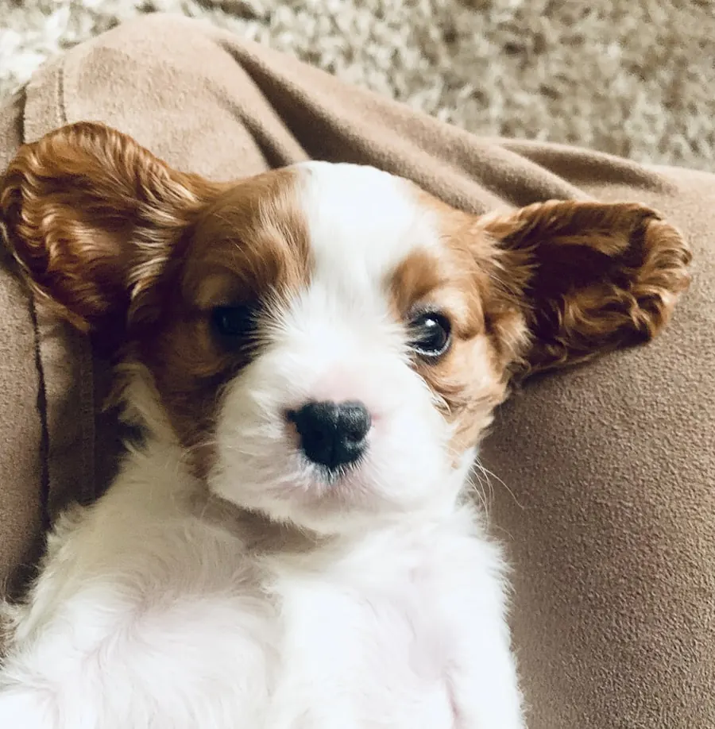

Anální žlázy u psa: kdy je řešit
Krátká odpověď: když pes jezdí po zadku, olizuje si zadeček nebo je kolem něj cítit nepříjemný zápach, můžou být plné anální žlázy. U nás je vyprázdníme za 60 Kč, často rovnou se stříháním nebo koupáním.

Co jsou anální žlázy
Anální (řitní) žlázy jsou dva malé váčky po stranách konečníku. Hromadí se v nich pachový sekret, který se psovi normálně vyprazdňuje při kálení. U malých plemen, u psů s měkčí stolicí nebo u těch, kteří mají žlázy uložené hlouběji, se ale sekret někdy nevyprázdní sám – žlázy se přeplní, tlačí a psa to obtěžuje.
Jak poznám, že je čas
- Jezdění po zadku („sáňkování“) po koberci nebo trávě.
- Olizování a okusování oblasti pod ocasem.
- Nepříjemný rybí zápach, který se objeví znenadání.
- Pes se ohlíží po zadečku, je neklidný, nerad si sedá.
Některá z těchto znamení může mít i jinou příčinu (parazity, alergii, zánět), proto je dobré nechat žlázy nejdřív zkontrolovat.
Vyprázdnění: u nás, nebo doma?
V salonu žlázy vyprázdníme rychle, hygienicky a bez stresu – často jako součást návštěvy na stříhání nebo koupání. Cena je 60 Kč. Děláme to běžně a pes to ani nestihne vnímat jako nepříjemnost.
Vyprázdnit žlázy doma sice jde, ale není to nic pro začátečníka – při špatné technice můžete žlázu podráždit nebo poranit. Pokud si nejste jistí, raději to nechte na nás nebo na veterináři.
Dá se tomu předcházet?
Úplně spolehlivě ne, ale pomáhá kvalitní strava a dostatek vlákniny pro pevnější stolici a přiměřená pohybová aktivita. U psů, kterým se žlázy plní pravidelně, se osvědčuje nechat je zkontrolovat při každé návštěvě salonu – ideálně každých 6–8 týdnů spolu se stříháním.
Vezmeme to při stříhání
Když objednáváte pejska na stříhání nebo koupání, řekněte nám, ať žlázy zkontrolujeme. Vyřídíme to v rámci jedné návštěvy a ušetříme vám cestu k veterináři kvůli rutinní záležitosti.
Jezdí váš pes po zadku?
Objednejte se – zkontrolujeme a vyřešíme. Praha 13 Lužiny, 1 minutu od metra.